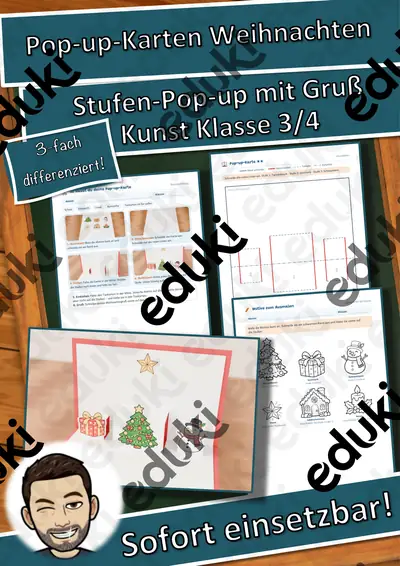
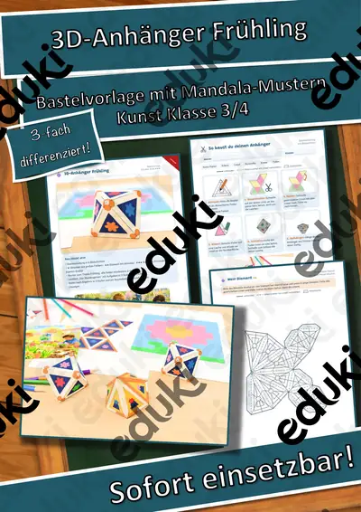

Stricken mit der Strickliesel – Schnüre für kleine Geschenke – Lesespurgeschichte mit Rätselaufgaben (Klasse 3)
Stricken mit der Strickliesel – Schnüre für kleine Geschenke – Lesespurgeschichte Werken und Gestalten (Klasse 3)Schick deine Klasse auf eine gemütliche Lesespur in die Bastelstube! Ilyas und Pia aus der 3. Klasse stricken an einem Adventsnachmittag bei Bastelpatin Frau Weber bunte Schnüre mit der Strickliesel – Maskottchen ist das fröhliche Wollknäuel Kugel. Von der Eingangstür über das Wollregal, das Spinnrad und den Strickliesel-Tisch bis zum Fensterplatz, zum Maßband, zur Nadeldose, zum Basteltisch und zur Geschenkecke erfahren die Kinder, wie aus Schafwolle Garn wird und wie man Schlinge für Schlinge eine Strickschnur strickt. Am Ende jedes Abschnitts verrät ein Hinweis den nächsten Ort auf dem Plan – nur wer genau liest, findet den Weg und sammelt alle geheimen Buchstaben zum Lösungswort.
Die passende Lesespur für Werken und Gestalten bzw. Textiles Gestalten in der Grundschule (Klasse 3, auch 2 und 4) – als Einstieg in das Stricken mit Strickliesel oder Strickring, ideal auch in der Adventszeit und für Vertretungsstunden. Geeignet für alle Bundesländer. Das Material ist SOFORT EINSETZBAR und in DREI DIFFERENZIERUNGSSTUFEN (leicht ★ / mittel ★★ / schwer ★★★) angelegt.WICHTIG: Das komplette Material ist sowohl in FARBE als auch in SCHWARZ-WEISS enthalten – ideal zum Sparen von Druckkosten.DAS IST ENTHALTEN
- Lesespurgeschichte in 3 Niveaus (leicht, mittel, schwer)
- farbiger Plan der Bastelstube als Suchkarte
- Hörverstehen mit QR-Code zur MP3 (selbstständiges Hören mit Kopfhörern)
- vier Aufträge auf dem Weg: eine Zuordnung, eine Rechenaufgabe zu Längen, ein Quiz und ein Steckbrief
- Rätselseite (Wörter-Suchsel + Fragen rund um die Strickliesel)
- Ausmalbild zum Thema
- ausführliches Lösungsblatt für die Lehrkraft mit allen Lösungen (Lesespur, Aufträge, Hörverstehen, Rätselseite)
- alles zusätzlich als komplette Schwarz-Weiß-VarianteSO GEHT DIE LESESPURDie Schülerinnen und Schüler lesen ab START, finden im Text den nächsten Ort, suchen ihn auf dem Plan und lesen bei dieser Station weiter. An jeder richtigen Station gibt es einen Buchstaben. Eingeplante Sackgassen (Teekanne, Keksdose, Sofa, Bücherregal) sind keine Stationen und dienen der Selbstkontrolle. Am Ende werden die gesammelten Buchstaben umgestellt und ergeben ein geheimes Lösungswort. (Die Lösungen sind selbstverständlich nur im Lösungsblatt für die Lehrkraft enthalten.)INHALTLICHER SCHWERPUNKTVom Schaf zur Wolle: Scheren, Waschen, Kämmen und Spinnen; Wolle und Garn; die Strickliesel und ihr Zubehör; Anschlagen, Maschen abheben, Schnur abketten; Längen messen; kleine Geschenke aus Strickschnüren.ABGEDECKTER LEHRPLAN (Klasse 3)
- Werken und Gestalten (LehrplanPLUS Grundschule Bayern 3/4) – textile Flächen herstellen, z. B. mit Strickrahmen oder Strickring; passend auch zum Textilen Gestalten anderer Länder.
- Mathematik – Längen messen und vergleichen.
- Deutsch – Sachtexte sinnentnehmend lesen; einem Hörtext gezielt Informationen entnehmen (Hörverstehen mit MP3).Geeignet für Freiarbeit, Stationenlernen, Vertretungsstunden, Wochenplan und als Einstieg ins Thema.
Ähnliche Materialien

Schokoladen-Banderole Weihnachten: Druckvorlage für die Schokoladentafel mit 4 Motiven (Klasse 1–4)

Große Tassen-Grußkarte mit Tasche: Druckvorlage Weihnachten mit 3 Figuren (Klasse 1–4)

Tassen-Karte mit Tasche: Druckvorlage für kleine Weihnachtsgeschenke mit 4 Motiven (Klasse 1–4)

Pop-up-Karten Weihnachten – Bastelvorlage mit Stufen-Pop-up, Motiven und Weihnachtsgruß, 3-fach differenziert (Klasse 3/4)

3D-Anhänger Sommer – Oktaeder, Diamant und Kugel zum Ausmalen und Basteln, 3-fach differenziert (Klasse 3/4)

3D-Anhänger Ostern – Oktaeder, Diamant und Kugel zum Ausmalen und Basteln, 3-fach differenziert (Klasse 3/4)

3D-Anhänger Fasching – Oktaeder, Diamant und Kugel zum Ausmalen und Basteln, 3-fach differenziert (Klasse 3/4)
